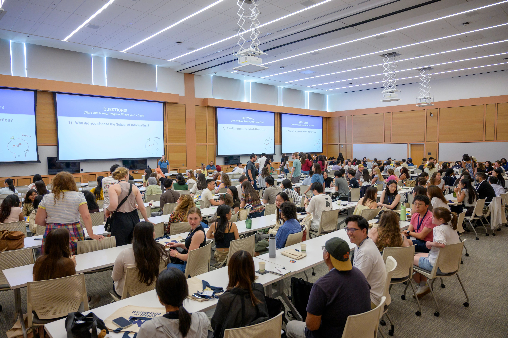

Partner communication
Draft clear, professional outreach to launch the working relationship. Introduce the team, the course context, and a few specific meeting times.

University of Michigan
Engaged Learning Office
Turn preparation into a working partnership.
Establish professional communication, run a clear kickoff, and document agreements so your team and partner share the same picture of success.

The starting phase is where abstract project ideas become structured, professional commitments. By establishing clear team contracts, co-creating agendas, and aligning on project scope early, you build psychological safety within your team and trust with your client.
Learning how to navigate early ambiguity is one of the most valuable professional capabilities you will gain at UMSI. Do not wait for a perfect plan. Start with a shared understanding of roles, communication, and what “done” means for this term.
If you have not yet reflected on positionality, team capacity, and partner context, return to Preparing for Your Experience before you send the first email.
Draft clear, professional outreach to launch the working relationship. Introduce the team, the course context, and a few specific meeting times.
Structure a kickoff that defines roles, constraints, success criteria, and how decisions will be made.
Document team commitments and a scope statement that all stakeholders can revisit when priorities shift.
Agree on channels, response windows, meeting frequency, and who sends the weekly update.
Keep the first message short, specific, and easy to answer. Offer two or three meeting times rather than asking the partner to start from a blank calendar.
Need a starting draft? Email umsi.engagement@umich.edu and ask for the Initial Client Email Examples used in ELO programs.
Aim for 30–45 minutes. Assign a facilitator, a notetaker, and a timekeeper before you join the call.
5 minutes. Introductions, course context, and what a successful kickoff will produce today.
10 minutes. Listen first. What problem matters now, who is affected, and what has already been tried?
10 minutes. Timeline, access to people or data, tools, confidentiality, and what is out of scope this term.
8 minutes. Primary contacts, meeting cadence, file sharing, and how feedback will be given.
5 minutes. Repeat decisions, owners, and dates. Send notes within one business day.
2 minutes. Capture what you still need before you lock a project brief.
A short written agreement protects both the team and the partner. It does not need legal language. It does need shared expectations.
Use the Project Management Worksheet (opens in a new tab) as a shared living document.
Partnership
Campus home for equitable university–community partnerships, student civic learning, and partnership practice.
Worksheet
Turn a partner’s needs into a realistic, time-boxed project goal.
Roles
Expectations for student leads during launch and weekly coordination.
Agreement
Put leadership responsibilities in writing for the student team.
ELO
Ask ELO for Initial Client Email Examples, a sample kickoff agenda, and partnership agreement templates used in current programs.
Office
Staff, mission, and how to stay connected while your project is getting underway.